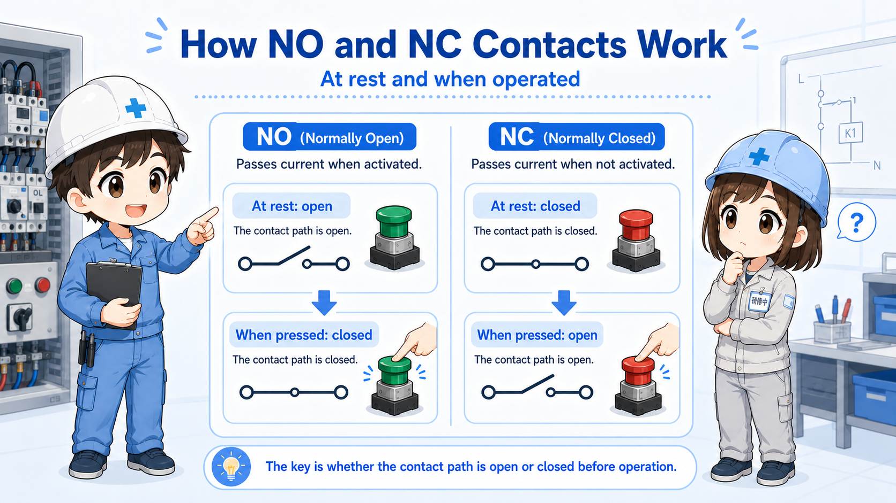
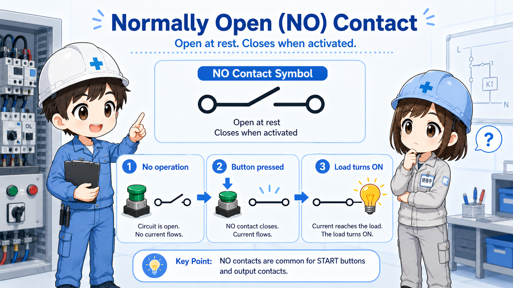
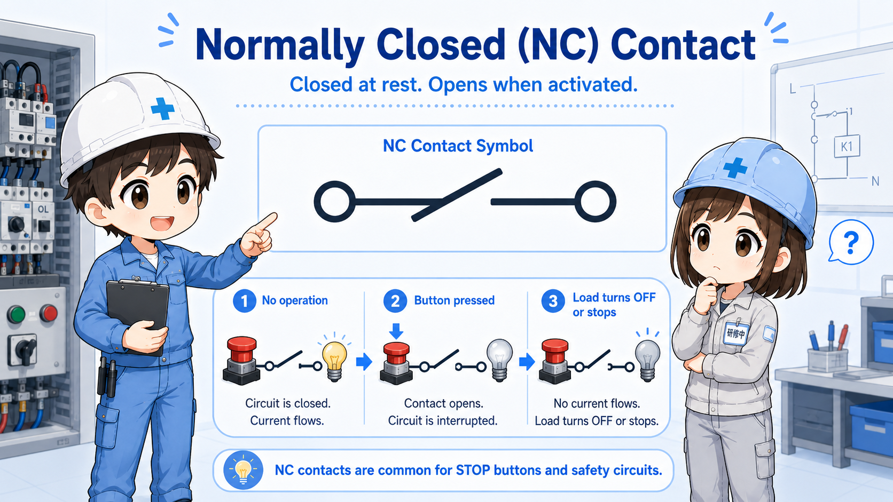
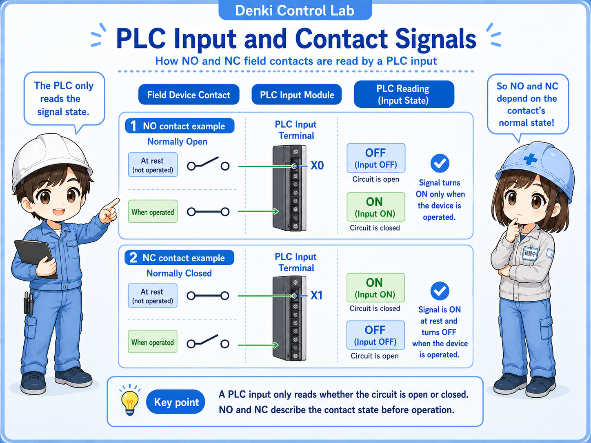
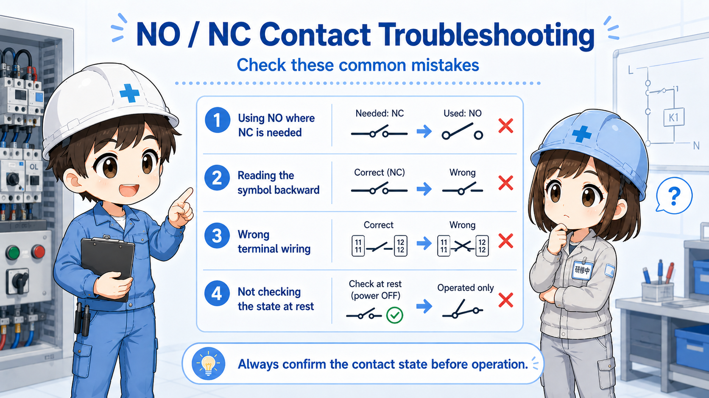

1. The basic idea: read the contact before it operates
NO and NC describe the contact state in its normal condition.
The words “normally open” and “normally closed” can sound confusing at first. The easiest way is to ask: what is the contact doing before the button is pressed, before the relay coil is energized, or before the sensor operates?
Short version: NO starts open and closes when operated. NC starts closed and opens when operated.
- NO
- NC
- Normally open
- Normally closed
- a-contact
- b-contact

The most important habit
Do not read NO/NC from what you want the machine to do. Read it from the contact's normal state first.
| Term | Long name | Normal state | When operated | Beginner-friendly image |
|---|---|---|---|---|
| NO | Normally Open | Open / not connected | Closes / becomes connected | A start signal that appears only when operated. |
| NC | Normally Closed | Closed / connected | Opens / becomes disconnected | A stop or break signal that disappears when operated. |
This difference is small, but it affects many practical checks. A start button, stop button, relay auxiliary contact, limit switch, pressure switch, and PLC input can all look confusing if you skip the normal state.

Senior
When you see NO or NC, stop and ask: “What is this contact doing when nothing is operating?”

Junior
So “normally” does not mean normal operation of the machine. It means the device is not pressed or energized?
Senior
Exactly. That one idea prevents a lot of confusion.
2. What “normal state” means
The normal state is the state before the device is operated.
For a push button, the normal state is before the button is pressed. For a relay, it is before the coil is energized. For a limit switch or sensor contact, it is the state before the actuator or detection condition changes it.
This is why the same contact can feel different depending on the device. A stop push button may be NC because the circuit should be connected while nothing is happening. A start push button may be NO because the circuit should connect only while you intentionally press it.
In drawings and ladder diagrams, do not judge only from the machine movement. First decide the physical normal state, then follow what happens when the device operates.
| Device | Normal state means | Operated state means |
|---|---|---|
| Push button | Button is not pressed. | Button is pressed. |
| Relay contact | Relay coil is not energized. | Relay coil is energized. |
| Limit switch | Switch is not actuated. | Switch is actuated by the mechanism. |
Why this matters
If you misunderstand the normal state, you may read the entire circuit backward. Always confirm the device condition before judging NO or NC behavior.
3. NO contact: normally open
A NO contact is open in the normal state and closes when operated.
A normally open contact is useful when you want a signal to turn on only after an action happens. For example, a start push button often uses a NO contact: it is open before pressing, and it closes while the button is pressed.
Normal
The contact is open. Current does not pass through the contact.
Operate
The button, relay, or switch operates.
Closed
The contact closes and allows the signal to pass.

4. NC contact: normally closed
A NC contact is closed in the normal state and opens when operated.
A normally closed contact is useful when you want a signal to be present until something happens. For example, a stop push button often uses a NC contact: it is closed normally, and pressing the button opens the circuit.
Normal
The contact is closed. Current can pass through the contact.
Operate
The button, relay, or switch operates.
Open
The contact opens and interrupts the signal.

Do not assume all stop circuits are simple
Real stop and safety-related circuits may include dedicated safety devices and standards. Always follow the actual drawings and site rules.
5. Relationship with a-contact and b-contact
In many Japanese electrical contexts, a-contact and b-contact correspond closely to NO and NC.
In many basic explanations, a-contact is treated as normally open, and b-contact is treated as normally closed. This is a useful bridge if you are moving between Japanese drawings, English labels, and PLC-related documentation.
| English term | Common Japanese term | Normal state | Operated state |
|---|---|---|---|
| NO / Normally Open | a-contact | Open | Closed |
| NC / Normally Closed | b-contact | Closed | Open |
Practical reading tip
When switching between NO/NC and a-contact/b-contact, keep the contact behavior in your head instead of memorizing only the letters.
6. NO / NC in PLC input checks
In PLC troubleshooting, contact type affects when the input turns on and off.
A PLC input does not know your intention. It only sees whether voltage or a signal condition is present at the input terminal. That is why NO/NC thinking is important when checking push buttons, sensors, relay contacts, and limit switches connected to PLC inputs.

Do not skip the input monitor
If the wiring and contact type look correct, check the PLC input monitor. The real input status often reveals whether your NO/NC assumption is correct.
7. Where NO and NC are commonly used
NO and NC contacts appear in many devices, but the purpose changes depending on the circuit.
Start push button
Often uses a NO contact. The signal appears only while the button is pressed, then a self-holding circuit may keep the output on.
Stop push button
Often uses a NC contact. The circuit is connected normally, and pressing the button opens the circuit to stop operation.
Relay auxiliary contact
NO and NC contacts change when the relay coil energizes. They are often used for self-holding, interlocks, and status signals.
Limit switch or sensor contact
The normal state depends on whether the switch is actuated in the machine's home position, work position, or abnormal position.
Field-friendly view
In troubleshooting, the question is not only “is this NO or NC?” It is also “what condition is the machine in right now?” The same contact label can be misunderstood if the mechanical state is ignored.
8. Common mistakes when reading NO and NC
Most mistakes come from mixing up the electrical normal state, the machine's normal operation, and the PLC monitor state.
Mistake 1: reading “normal” as normal production
“Normal” in NO/NC usually means the device is not operated, not necessarily that the machine is running normally.
Mistake 2: judging from the lamp or output only
A lamp or output status may be affected by other logic. Confirm the actual contact state and input state separately.
Mistake 3: forgetting relay coil state
Relay contacts change based on the relay coil. If you do not know whether the coil is energized, you cannot correctly judge the contact.
Mistake 4: assuming all devices use the same terminal layout
Terminal numbers and contact arrangement differ by product. Always check the drawing or device marking.
Small wording, big troubleshooting effect
NO/NC is a basic concept, but it directly affects start/stop circuits, self-holding circuits, interlocks, alarms, PLC input checks, and sensor replacement work.
9. Troubleshooting NO / NC mistakes
Many beginner mistakes come from reading the contact state backward.
1. Confirm the device state
Is the button pressed, relay energized, switch actuated, or sensor detected?
2. Confirm the contact type
Is the contact actually NO or NC according to the device label or drawing?
3. Check continuity or signal
Does the contact open or close when the device operates?
4. Compare with PLC input
Does the PLC input monitor match the expected contact behavior?

Junior
The input is on even though I expected it to be off. Did I wire it wrong?
Senior
Maybe, but first confirm whether the contact is NO or NC and what “normal” means for that device.
10. Practical safety notes
NO/NC contacts are simple, but the circuit using them may not be simple.
A contact may be part of an interlock, stop circuit, alarm circuit, safety device, or machine-specific logic. Always follow drawings, site procedures, lockout/tagout rules, and device manuals when measuring or changing wiring.
Also remember that PLC logic may invert or rename signals. A physical NC contact may appear as an ON input in the normal state, and the program may treat that as “normal condition OK.” This is why the drawing, input monitor, and actual device state should be checked together.
Keep learning in layers
NO/NC contacts become much easier when you also understand relay coils, PLC inputs and outputs, self-holding circuits, and interlock circuits.